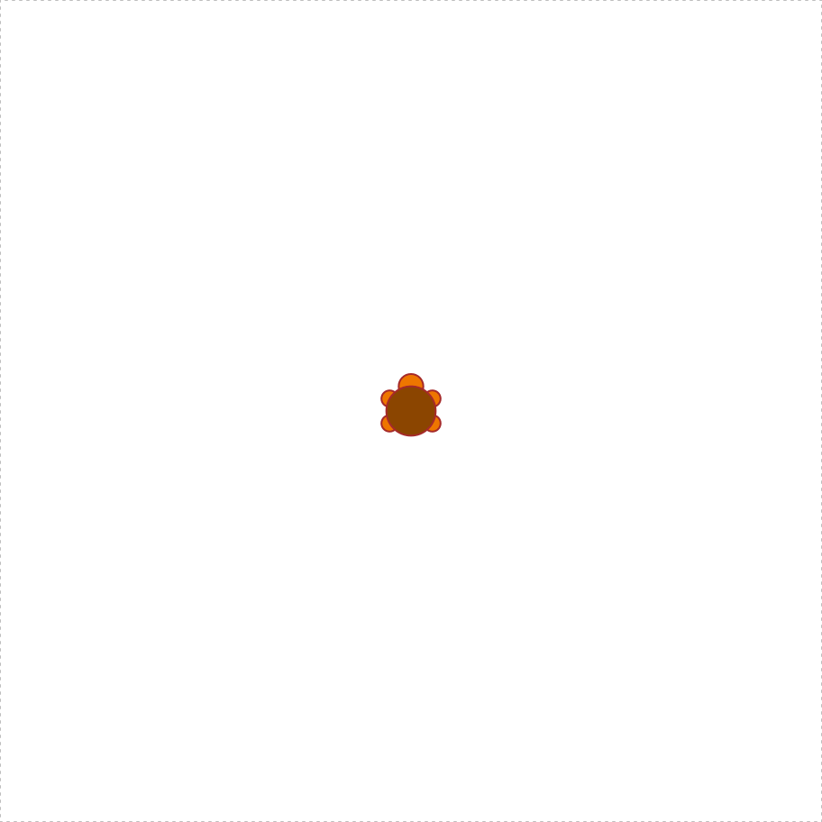

quadruple <- function(x) {
y <- x * 4
return(y)
}9. Writing functions
In this section I want to talk about functions again. We’ve been using functions from the beginning, but you’ve learned a lot about R since then, so we can talk about them in more detail. In particular, I want to show you how to create your own. To stick with the same basic framework that I used to describe loops and conditionals, here’s the syntax that you use to create a function:
FNAME <- function( ARG1, ARG2, ETC ) {
STATEMENT1
STATEMENT2
ETC
return( VALUE )
}What this does is create a function with the name fname, which has arguments arg1, arg2 and so forth. Whenever the function is called, R executes the statements in the curly braces, and then outputs the contents of value to the user. Note, however, that R does not execute the function commands inside the workspace. Instead, what it does is create a temporary local environment: all the internal statements in the body of the function are executed there, so they remain invisible to the user. Only the final results in the value are returned to the workspace.
1 A boring example
To give a simple example of this, let’s create a function called quadruple which multiplies its inputs by four.
When we run this command, nothing happens apart from the fact that a new object appears in the workspace corresponding to the quadruple function. Not surprisingly, if we ask R to tell us what kind of object it is, it tells us that it is a function:
class(quadruple)[1] "function"And now that we’ve created the quadruple() function, we can call it just like any other function:
quadruple(10)[1] 40An important thing to recognise here is that the two internal variables that the quadruple function makes use of, x and y, stay internal. At no point do either of these variables get created in the workspace.
2 A fun example
First I’ll load the packages I’ll need
library(grid)
library(TurtleGraphics)Now I’ll define a function that draws a polygon:
turtle_polygon <- function(sides) {
for(i in 1:sides) {
turtle_forward(distance = 10) # move
turtle_left(angle = 360/sides) # turn left
}
}Now we can have our turtle draw whatever polygon we like:
turtle_init()turtle_polygon(sides = 9)
3 Default arguments
Okay, now that we are starting to get a sense for how functions are constructed, let’s have a look at a slightly more complex example. Consider this function:
pow <- function(x, y = 1) {
out <- x ^ y # raise x to the power y
return(out)
}The pow function takes two arguments x and y, and computes the value of \(x^y\). For instance, this command
pow(x = 4, y = 2)[1] 16computes 4 squared. The interesting thing about this function isn’t what it does, since R already has has perfectly good mechanisms for calculating powers. Rather, notice that when I defined the function, I specified y=1 when listing the arguments? That’s the default value for y. So if we enter a command without specifying a value for y, then the function assumes that we want y=1:
pow(x = 3)[1] 3However, since I didn’t specify any default value for x when I defined the pow function, the user must input a value for x or else R will spit out an error message.
4 Unspecified arguments
The other thing I should point out while I’m on this topic is the use of the ... argument. The ... argument is a special construct in R which is only used within functions. It is used as a way of matching against multiple user inputs: in other words, ... is used as a mechanism to allow the user to enter as many inputs as they like. I won’t talk at all about the low-level details of how this works at all, but I will show you a simple example of a function that makes use of it. Consider the following:
doubleMax <- function(...) {
max.val <- max(...) # find the largest value in ...
out <- 2 * max.val # double it
return(out)
}The doubleMax function doesn’t do anything with the user input(s) other than pass them directly to the max function. You can type in as many inputs as you like: the doubleMax function identifies the largest value in the inputs, by passing all the user inputs to the max function, and then doubles it. For example:
doubleMax(1, 2, 5)[1] 105 More on functions?
There’s a lot of other details to functions that I’ve hidden in my description in this chapter. Experienced programmers will wonder exactly how the scoping rules work in R, or want to know how to use a function to create variables in other environments, or if function objects can be assigned as elements of a list and probably hundreds of other things besides. However, I don’t want to have this discussion get too cluttered with details, so I think it’s best – at least for the purposes of the current book – to stop here.
6 Putting it together
Although the three ideas that we’ve talked about – loops, branches and now functions – are fairly simple ideas individually, they become extremely powerful once we start putting them together. To give you an illustration of this, let’s make our turtle draw a more complicated shape. First, we’ll modify the turtle_polygon function to be more flexible:
turtle_polygon <- function(sides, size = 10, direction = "left") {
for(i in 1:sides) {
turtle_forward(distance = size) # move
turtle_turn(angle = 360/sides, direction = direction) # turn
}
}With this version of the function, we have control over the number of sides in the polygon, the size of each step, and the direction in which the turtle turns when drawing the polygon. Now we can define another function which_way that uses an if statement to determine the direction that the turtle wants to go depending on the number of sides in the polygon:
which_way <- function(sides) {
if(sides < 6) {
direction <- "left"
} else {
direction <- "right"
}
return(direction)
}When we put these functions together in a loop, the turtle draws a much more complicated shape:
turtle_init()for(s in 3:8) {
turtle_polygon(sides = s, direction = which_way(s))
}🐢 💃 🎉
7 Exercises
- Write a function that takes a number
xas input, takes the square root (usingsqrt), rounds it to the nearest whole number (usinground) and then returns the result - Modify your function so that the user can control the number of
digitsto which the result is rounded (recall thatroundhas adigitsargument) - Modify the function so that by default
digits = 0
The solutions for these exercises are here.